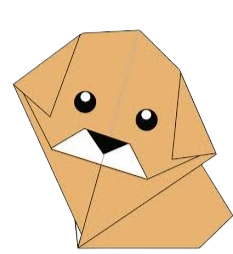

1.camel
- Camel's ears are furry.
- When they find water, they will drink as much as possible.

2.Panda
- They spend a lot of their day eating.
- Their Eyes are different to normal bears.

3.Chameleon
- Their feets worked like salad tongs
- unlike many lizards chameleon can't regrow their tails

4.cicada
- Cicadas can survive a huge fall as babies, or nymphs
- Most have red-orange eyes.

5.Pigeon
- Pigeons are incredibly complex and intelligent animals.
- Pigeons are renowned for their outstanding navigational abilities.

6.Teddy
- The teddy was named after President Theodore Roosevelt, after he refused to shoot a bear during a 1902 hunting trip..
- The Teddy Bears' Picnic song was originally called The Teddy Bear Two Step.

7.Dog.
- Dogs noses are wet to help absorb scent chemicals.
- A blind man and his guide dog hiked the Appalachian Trail.
.png)
8.Frog.
- One gram of the toxin produced by the skin of the golden poison dart frog could kill 100,000 people.
- There is a frog in Indonesia that has no lungs – it breathes entirely through its skin.